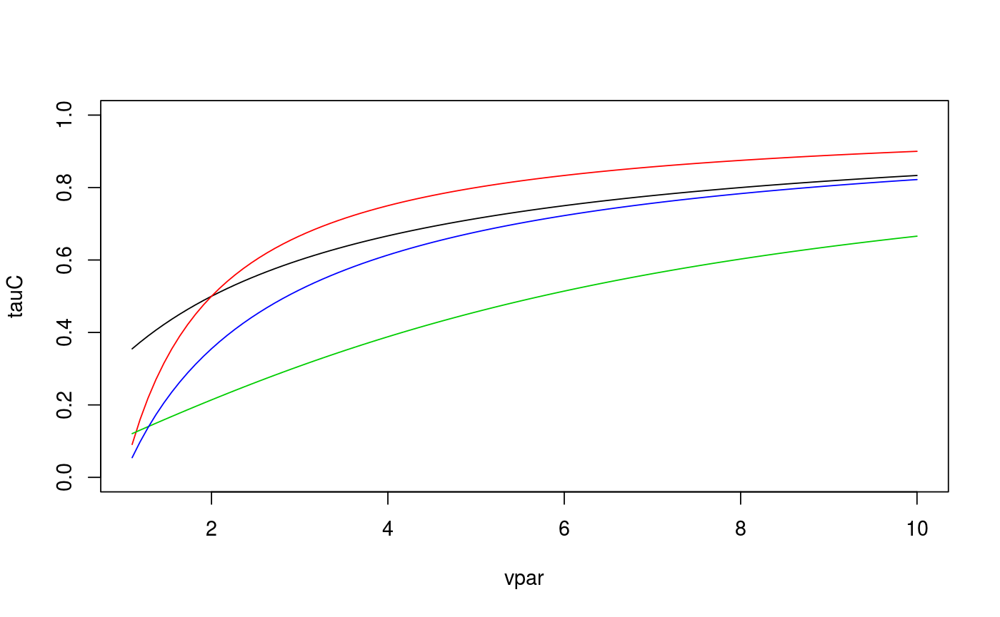

This function computes the theoretical Kendall's tau value of a bivariate copula for given parameter values.
BiCopPar2Tau(family, par, par2 = 0, obj = NULL, check.pars = TRUE)integer; single number or vector of size m; defines the
bivariate copula family: 0 = independence copula 1 = Gaussian copula 2 = Student t copula (t-copula) 3 = Clayton copula 4 = Gumbel copula 5 = Frank copula 6 = Joe copula 7 = BB1 copula 8 = BB6 copula 9 = BB7 copula 10 = BB8 copula 13 = rotated Clayton copula (180 degrees; survival Clayton'') \cr `14` = rotated Gumbel copula (180 degrees; survival Gumbel”) 16 = rotated Joe copula (180 degrees; survival Joe'') \cr `17` = rotated BB1 copula (180 degrees; survival BB1”)18 = rotated BB6 copula (180 degrees; survival BB6'')\cr `19` = rotated BB7 copula (180 degrees; survival BB7”)20 = rotated BB8 copula (180 degrees; “survival BB8”)23 = rotated Clayton copula (90 degrees)
`24` = rotated Gumbel copula (90 degrees)
`26` = rotated Joe copula (90 degrees)
`27` = rotated BB1 copula (90 degrees)
`28` = rotated BB6 copula (90 degrees)
`29` = rotated BB7 copula (90 degrees)
`30` = rotated BB8 copula (90 degrees)
`33` = rotated Clayton copula (270 degrees)
`34` = rotated Gumbel copula (270 degrees)
`36` = rotated Joe copula (270 degrees)
`37` = rotated BB1 copula (270 degrees)
`38` = rotated BB6 copula (270 degrees)
`39` = rotated BB7 copula (270 degrees)
`40` = rotated BB8 copula (270 degrees)
`104` = Tawn type 1 copula
`114` = rotated Tawn type 1 copula (180 degrees)
`124` = rotated Tawn type 1 copula (90 degrees)
`134` = rotated Tawn type 1 copula (270 degrees)
`204` = Tawn type 2 copula
`214` = rotated Tawn type 2 copula (180 degrees)
`224` = rotated Tawn type 2 copula (90 degrees)
`234` = rotated Tawn type 2 copula (270 degrees)
numeric; single number or vector of size n; copula
parameter.
numeric; single number or vector of size n; second
parameter for bivariate copulas with two parameters (t, BB1, BB6, BB7, BB8,
Tawn type 1 and type 2; default: par2 = 0). Note that the degrees of
freedom parameter of the t-copula does not need to be set, because the
theoretical Kendall's tau value of the t-copula is independent of this
choice.
BiCop object containing the family and parameter
specification.
logical; default is TRUE; if FALSE, checks
for family/parameter-consistency are omitted (should only be used with
care).
Theoretical value of Kendall's tau (vector) corresponding to the
bivariate copula family and parameter vector \((\theta, \delta) =\)
(par, par2).
No. (family) | Kendall's tau (tau) |
1, 2 | \(\frac{2}{\pi}\arcsin(\theta)\) |
3, 13 | \(\frac{\theta}{\theta+2}\) |
4, 14 | \(1-\frac{1}{\theta}\) |
5 | \(1-\frac{4}{\theta}+4\frac{D_1(\theta)}{\theta}\) |
| with \(D_1(\theta)=\int_0^\theta \frac{x/\theta}{\exp(x)-1}dx\) (Debye function) | |
6, 16 | \(1+\frac{4}{\theta^2}\int_0^1 x\log(x)(1-x)^{2(1-\theta)/\theta}dx\) |
7, 17 | \(1-\frac{2}{\delta(\theta+2)}\) |
8, 18 | \(1+4\int_0^1 -\log(-(1-t)^\theta+1) (1-t-(1-t)^{-\theta}+(1-t)^{-\theta}t)/(\delta\theta) dt\) |
9, 19 | \(1+4\int_0^1 ( (1-(1-t)^{\theta})^{-\delta} - 1) /( -\theta\delta(1-t)^{\theta-1}(1-(1-t)^{\theta})^{-\delta-1} ) dt\) |
10, 20 | \(1+4\int_0^1 -\log \left(((1-t\delta)^\theta-1)/((1-\delta)^\theta-1) \right) \) |
| \(* (1-t\delta-(1-t\delta)^{-\theta}+(1-t\delta)^{-\theta}t\delta)/(\theta\delta) dt\) | |
23, 33 | \(\frac{\theta}{2-\theta}\) |
24, 34 | \(-1-\frac{1}{\theta}\) |
26, 36 | \(-1-\frac{4}{\theta^2}\int_0^1 x\log(x)(1-x)^{-2(1+\theta)/\theta}dx\) |
27, 37 | \(-1-\frac{2}{\delta(2-\theta)}\) |
28, 38 | \(-1-4\int_0^1 -\log(-(1-t)^{-\theta}+1) (1-t-(1-t)^{\theta}+(1-t)^{\theta}t)/(\delta\theta) dt\) |
29, 39 | \(-1-4\int_0^1 ( (1-(1-t)^{-\theta})^{\delta} - 1) /( -\theta\delta(1-t)^{-\theta-1}(1-(1-t)^{-\theta})^{\delta-1} ) dt\) |
30, 40 | \(-1-4\int_0^1 -\log \left( ((1+t\delta)^{-\theta}-1)/((1+\delta)^{-\theta}-1) \right)\) |
| \(* (1+t\delta-(1+t\delta)^{\theta}-(1+t\delta)^{\theta}t\delta)/(\theta\delta) dt\) | |
104,114 | \(\int_0^1 \frac{t(1-t)A^{\prime\prime}(t)}{A(t)}dt\) |
| with \(A(t) = (1-\delta)t+[(\delta(1-t))^{\theta}+t^{\theta}]^{1/\theta}\) | |
204,214 | \(\int_0^1 \frac{t(1-t)A^{\prime\prime}(t)}{A(t)}dt\) |
| with \(A(t) = (1-\delta)(1-t)+[(1-t)^{-\theta}+(\delta t)^{-\theta}]^{-1/\theta}\) | |
124,134 | \(-\int_0^1 \frac{t(1-t)A^{\prime\prime}(t)}{A(t)}dt\) |
| with \(A(t) = (1-\delta)t+[(\delta(1-t))^{-\theta}+t^{-\theta}]^{-1/\theta}\) | |
224,234 | \(-\int_0^1 \frac{t(1-t)A^{\prime\prime}(t)}{A(t)}dt\) |
| with \(A(t) = (1-\delta)(1-t)+[(1-t)^{-\theta}+(\delta t)^{-\theta}]^{-1/\theta}\) |
If the family and parameter specification is stored in a BiCop()
object obj, the alternative version
BiCopPar2Tau(obj)can be used.
The number n can be chosen arbitrarily, but must agree across
arguments.
Joe, H. (1997). Multivariate Models and Dependence Concepts. Chapman and Hall, London.
Czado, C., U. Schepsmeier, and A. Min (2012). Maximum likelihood estimation of mixed C-vines with application to exchange rates. Statistical Modelling, 12(3), 229-255.
## Example 1: Gaussian copula
tau0 <- 0.5
rho <- BiCopTau2Par(family = 1, tau = tau0)
# transform back
tau <- BiCopPar2Tau(family = 1, par = rho)
tau - 2/pi*asin(rho)
#> [1] 0
## Example 2:
vpar <- seq(from = 1.1, to = 10, length.out = 100)
tauC <- BiCopPar2Tau(family = 3, par = vpar)
tauG <- BiCopPar2Tau(family = 4, par = vpar)
tauF <- BiCopPar2Tau(family = 5, par = vpar)
tauJ <- BiCopPar2Tau(family = 6, par = vpar)
plot(tauC ~ vpar, type = "l", ylim = c(0,1))
lines(tauG ~ vpar, col = 2)
lines(tauF ~ vpar, col = 3)
lines(tauJ ~ vpar, col = 4)

## Example 3: different copula families
theta <- BiCopTau2Par(family = c(3,4,6), tau = c(0.4, 0.5, 0.6))
BiCopPar2Tau(family = c(3,4,6), par = theta)
#> [1] 0.4 0.5 0.6